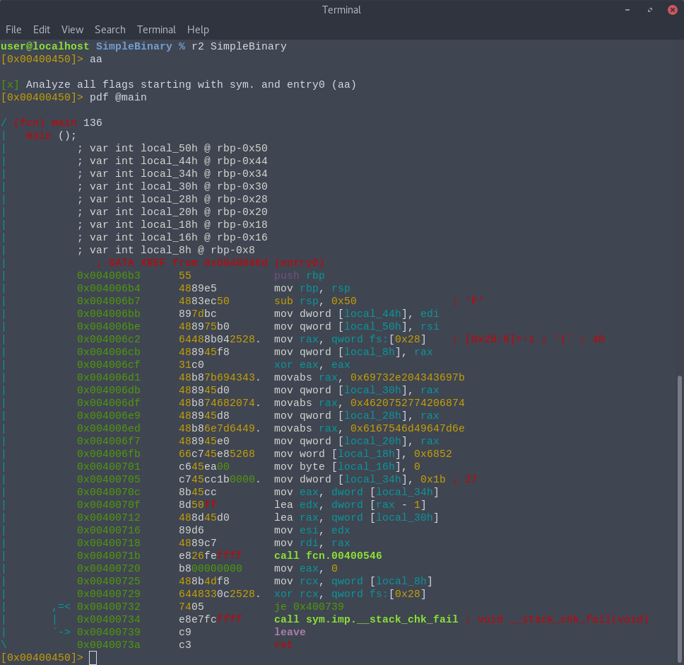
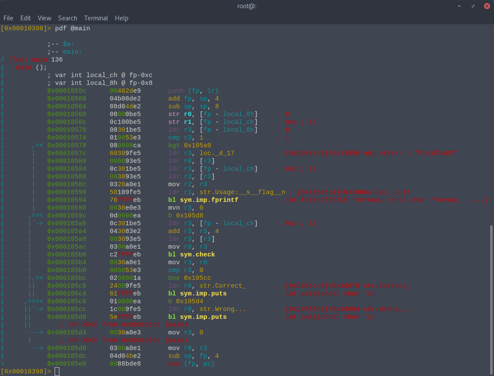
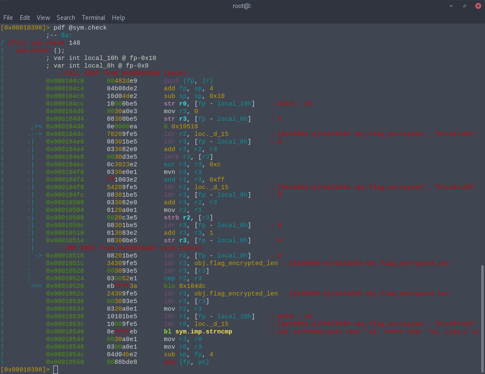
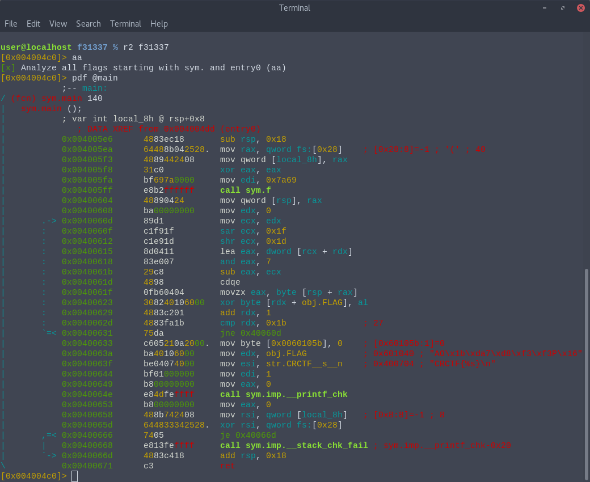
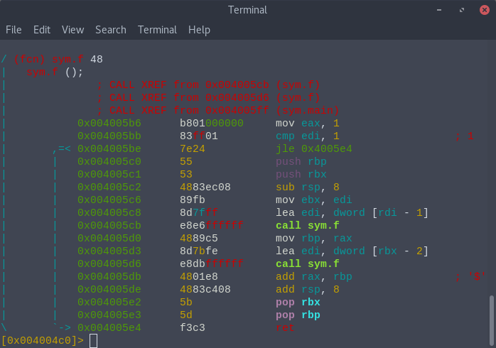

CyberRebeatCTFの参戦記とwriteup
Tweet1. 参戦記
CyberRebeatCTFに生活習慣崩壊ズで参加した。ちょうど同じ日に渋渋の文化祭があって僕とkeymoonと漁師が遊びに来ていたので、文化祭の後に渋谷で集まってオンサイトCTF(？)をやった。漁師とkeymoonとえかすどが大量に問題を解いていてプロかった。8日の夜に全完を達成して同立一位に並んだ。やったね 僕は例によってbinary以外に手をつけてません そろそろこれもやめたいね
2. writeup
一応アセンブラの知識があんまりない人でもなんとなく解法の流れをつかめるくらいには細かく解説したつもりなんですけど、わかりにくかったらTwitter: @zohen0あたりに文句を投げてください
2-1. SimpleBinary
ELFフォーマットのx86-64の実行可能ファイルが一つ与えられる。早速radare2で逆アセンブルをかけてみると
こうなる。以下アセンブリを大雑把に説明していく。
push rbp
mov rbp, rsp
sub rsp, 0x50
mov dword [local_44h], edi
mov qword [local_50h], rsi
mov rax, qword fs:[0x28]
mov qword [local_8h], rax
xor eax, eax
この部分は卍おまじない卍であって本質にはあまり関係ないので飛ばす。次。
movabs rax, 0x69732e204343697b
mov qword [local_30h], rax
rbp-0x30を始点に8バイトを代入している。この結果メモリは以下のような状態になる。
| rbp-0x30 | 0x7b | rbp-0x22 | - |
| rbp-0x2f | 0x69 | rbp-0x21 | - |
| rbp-0x2e | 0x43 | rbp-0x20 | - |
| rbp-0x2d | 0x43 | rbp-0x1f | - |
| rbp-0x3c | 0x20 | rbp-0x1e | - |
| rbp-0x2b | 0x2e | rbp-0x1d | - |
| rbp-0x2a | 0x73 | rbp-0x1c | - |
| rbp-0x29 | 0x69 | rbp-0x1b | - |
| rbp-0x28 | - | rbp-0x1a | - |
| rbp-0x27 | - | rbp-0x19 | - |
| rbp-0x26 | - | rbp-0x18 | - |
| rbp-0x25 | - | rbp-0x17 | - |
| rbp-0x24 | - | rbp-0x16 | - |
| rbp-0x23 | - |
movabs rax, 0x4620752774206874
mov qword [local_28h], rax
と
movabs rax, 0x6167546d49647d6e
mov qword [local_20h], rax
と
mov word [local_18h], 0x6852
mov byte [local_16h], 0
も同様の処理を行っている。最終的にメモリはこう↓なる。
| rbp-0x30 | 0x7b | rbp-0x22 | 0x20 |
| rbp-0x2f | 0x69 | rbp-0x21 | 0x46 |
| rbp-0x2e | 0x43 | rbp-0x20 | 0x6e |
| rbp-0x2d | 0x43 | rbp-0x1f | 0x7d |
| rbp-0x3c | 0x20 | rbp-0x1e | 0x64 |
| rbp-0x2b | 0x2e | rbp-0x1d | 0x49 |
| rbp-0x2a | 0x73 | rbp-0x1c | 0x6d |
| rbp-0x29 | 0x69 | rbp-0x1b | 0x54 |
| rbp-0x28 | 0x74 | rbp-0x1a | 0x67 |
| rbp-0x27 | 0x68 | rbp-0x19 | 0x61 |
| rbp-0x26 | 0x20 | rbp-0x18 | 0x52 |
| rbp-0x25 | 0x74 | rbp-0x17 | 0x68 |
| rbp-0x24 | 0x27 | rbp-0x16 | 0x00 |
| rbp-0x23 | 0x75 |
これらをrbp-0x30を始点とする文字列とすると、rbp-0x30をlocal_30h[0]として
| local_30h[0] | '{' | local_30h[14] | ' ' |
| local_30h[1] | 'i' | local_30h[15] | 'F' |
| local_30h[2] | 'C' | local_30h[16] | 'n' |
| local_30h[3] | 'C' | local_30h[17] | '}' |
| local_30h[4] | ' ' | local_30h[18] | 'd' |
| local_30h[5] | '.' | local_30h[19] | 'I' |
| local_30h[6] | 's' | local_30h[20] | 'm' |
| local_30h[7] | 'i' | local_30h[21] | 'T' |
| local_30h[8] | 't' | local_30h[22] | 'g' |
| local_30h[9] | 'h' | local_30h[23] | 'a' |
| local_30h[10] | ' ' | local_30h[24] | 'R' |
| local_30h[11] | 't' | local_30h[25] | 'h' |
| local_30h[12] | ''' | local_30h[26] | '\0' |
| local_30h[13] | 'u' |
こう。
mov dword [local_34h], 0x1b
mov eax, dword [local_34h]
lea edx, dword [rax - 1]
lea rax, qword [local_30h]
mov esi, edx
mov rdi, rax
call fcn.00400546
mov eax, 0
mov rcx, qword [local_8h] ;ここから先はおまじない
xor rcx, qword fs:[0x28]
je 0x400739
call sym.imp.__stack_chk_fail
leave
ret
esiにlocal_34h - 1(== 0x1a == 26)を、rdiにlocal_30hを代入したあとfcn.00400546を呼んでmain内の本処理は終わっている。
なのでfcn.00400546内を見ればたぶんflagがわかるんだろう。ということでradare2内でpdf @fcn.00400546と打ってみると
はい。長くてこれを全部解説する気力もないのでCに書き起こしたものだけを提示する。
void fcn_00400546(int local_8ch, char *local_88h) {
int local_70h[] = {3, 11, 0, 22, 15, 22, 19, 12, 7, 11, 14, 23,
15, 23, 1, 20, 20, 1, 17, 20, 9, 3, 1, 14, 1, 22};
for (int local_74h = 0; local_74h < local_8ch; local_74h++) {
char local_75h = local_88h[local_74h];
local_88h[local_74h] = local_88h[local_70h[local_74h]];
local_88h[local_70h[local_74h]] = local_75h;
}
return;
}
見ればわかると思うけど
local_88h[local_74h]local_88h[local_70h[local_74h]]fcn_00400546(0x1b - 1, "{iCC .sith t'u Fn}dImTgaRh")の結果を出力するコードを自前でCで書いた。
void fcn_00400546(int local_8ch, char *local_88h) {
int local_70h[] = {3, 11, 0, 22, 15, 22, 19, 12, 7, 11, 14, 23,
15, 23, 1, 20, 20, 1, 17, 20, 9, 3, 1, 14, 1, 22};
for (int local_74h = 0; local_74h < local_8ch; local_74h++) {
char local_75h = local_88h[local_74h];
local_88h[local_74h] = local_88h[local_70h[local_74h]];
local_88h[local_70h[local_74h]] = local_75h;
}
puts(local_88h);
return;
}
int main(void) {
char local_30h[] = "{iCC .sith t'u Fn}dImTgaRh";
fcn_00400546(0x1b - 1, local_30h);
}
user@localhost SimpleBinary % gcc solver.c
user@localhost SimpleBinary % ./a.out
CRCTF{It's a humid night.}
大☆勝☆利（エ） 無事フラグを取れたので提出。AC。
2-2. crackme
実行ファイルっぽいものを与えられるので試しに手元のパソコンで動かしたがzsh: exec format error: ./crackmeと怒られてしまう。fileコマンドで確認してみると
user@localhost crackme % file ./crackme
./crackme: ELF 32-bit LSB executable, ARM, EABI5 version 1 (SYSV), dynamically linked, interpreter /lib/ld-linux.so.3, for GNU/Linux 3.2.0, BuildID[sha1]=e1b0c82beaf7766d8696b9f85d2b17f52ea7fa38, not stripped
x86ではなくてarmのバイナリだった。
実はarmのアセンブリをまったく知らないのでオペコードなどをググりつつ雰囲気で読んでいった。コマンドライン引数でフラグを受け取ってcheck関数でそれが正しいかを判定するっぽい。ということでcheck関数の中身を覗く。
これも1行ずつ解説していくのは怠いのでCへの書き起こしを代わりにのっけとく。
int check(char *local_10h) {
char flag_encrypted[24] = {0xb0, 0xa1, 0xb0, 0xa7, 0xb5, 0x88, 0x9b, 0x96, 0x9f, 0x9f, 0x9c,
0xac, 0xc7, 0x81, 0x9e, 0xac, 0x84, 0x9c, 0x81, 0x9f, 0x97, 0xd2, 0x8e, 0x00};
for (local_8h = 0; local_8h < 23; local_8h++)
flag_encrypted[local_8h] = ~(flag_encrypted[local_8h] ^ 0xc) & 0xff;
return strncmp(flag_encrypted, local_10h, 23);
}
一文字ずつ~(i ^ 0xc)で暗号化を施している。これらの情報をもとにCで↓のようなソルバーを書いた。
#include <stdio.h>
int main(void) {
int flag_encrypted[23] = {0xb0, 0xa1, 0xb0, 0xa7, 0xb5, 0x88, 0x9b, 0x96, 0x9f, 0x9f, 0x9c,
0xac, 0xc7, 0x81, 0x9e, 0xac, 0x84, 0x9c, 0x81, 0x9f, 0x97, 0xd2, 0x8e};
for (int i = 0; i < 23; i++)
putchar(~(flag_encrypted[i] ^ 0xc) & 0xff);
putchar('\n');
}
user@localhost crackme % gcc solver.c
user@localhost crackme % ./a.out
CRCTF{hello_4rm_world!}
提出。あってた。おしまい。
2-3. f31337
まず上の二問と同じようにradare2でmainの中身を見てみる。
sub rsp, 0x18
mov rax, qword fs:[0x28] ; [0x28:8]=-1 ; '(' ; 40
mov qword [local_8h], rax
xor eax, eax
例によっておまじないなのでとりあえず無視してよし。
mov edi, 0x7a69
call sym.f
引数に0x7a69を渡してfを呼んでいる。fの中身を調べるのは後回しにしておこう。
mov qword [rsp], rax
[rsp]を始点とした8番地にraxの中身をコピーしている。
mov edx, 0
mov ecx, edx ;0x40060d
sar ecx, 0x1f
shr ecx, 0x1d
lea eax, dword [rcx + rdx]
and eax, 7
sub eax, ecx
cdqe
movzx eax, byte [rsp + rax]
xor byte [rdx + obj.FLAG], al
add rdx, 1
cmp rdx, 0x1b ; 27
jne 0x40060d
どうやらこの部分でフラグを復号化しているらしい。なんかcdqeだのなんだのよくわからない命令がたくさん並んでるけどここは気合を入れて読んでいきますわよーッ！(突然のお嬢様口調)for文で書いてみると↓みたいになりますわ。
for(register int edx = 0; edx != 27; edx++) {
register int ecx = edx;
ecx = ecx >> 0x1f >> 0x1d; //0 <= edx < 27のときは常に0なので無視できる
flag[edx] ^= rsp[(ecx + edx) % 8 - ecx]; //char rsp[8] = f(0x7a69);
}
さて、ここで配列rspに何が入ってるかというとさっきのf(0x71a69)の返り値ですわね それじゃあfの中身をようやくですけど見てみましょうですわ
これくらいなら多分個々の命令の解説はしなくても大丈夫でしょう 再帰でフィボナッチ数列のn項目(n = 0, 1, 2, 3...)を求める関数みたいですわね
mov byte [0x0060105b], 0 ; [0x60105b:1]=0
mov edx, obj.FLAG ; 0x601040 ; "AO\x1b\xda7\xd8\xf3\xf3P\x16"
mov esi, str.CRCTF__s__n ; 0x400704 ; "CRCTF{%s}\n"
mov edi, 1
mov eax, 0
call sym.imp.__printf_chk
mov eax, 0
mov rsi, qword [local_8h] ; [0x8:8]=-1 ; 8 ;ここから先おまじない
xor rsi, qword fs:[0x28]
je 0x40066d
call sym.imp.__stack_chk_fail ; sym.imp.__printf_chk-0x20
add rsp, 0x18
ret
後の部分は復号化したフラグを出力するだけ。十分情報が揃ったのでソルバーを書く。
#include <stdio.h>
int main(void) {
int flag[27] = {0x41, 0x4f, 0x1b, 0xda, 0x37, 0xd8, 0xf3, 0xf3, 0x50, 0x16, 0x00, 0xcd, 0x37,
0x84, 0xb4, 0xcf, 0x4e, 0x4c, 0x1c, 0xd1, 0x37, 0xd3, 0xf4, 0xe3, 0x4c, 0x5e, 0x4f},
key[8] = {0x38, 0x7f, 0x6e, 0xa8, 0x68, 0xb5, 0xc7, 0x90}; //f(0x7a69) == 0x90c7b568a86e7f38 x86はリトルエンディアンなので実際のメモリ上での数値の配列は左のような順番になることに注意
printf("CRCTF{");
for (int i = 0; i < 27; i++) {
putchar(flag[i] ^ key[i % 8]);
}
puts("}");
}
余談だが、フィボナッチ数列の項を再帰で計算する方法はnが0x7a69みたいに大きい数になると大変な時間がかかってしまいコンテスト開催期間に間に合うかも怪しいくらいなので、動的計画法的(知らない人は「DP フィボナッチ」とかでググって)なやりかたを使った方が絶対に良い。こちらの方法であればn = 0x7a69でも一瞬で答えが得られる。
user@localhost f31337 % gcc solver3.c
user@localhost f31337 % ./a.out
CRCTF{y0ur_m4chine_1s_v3ry_f3st!!}
それっぽいのが出てきた。しかし本番でこのフラグを提出したところ何故か弾かれてしまった。どこで間違えたのかがわからず唸っていたところ、隣の席で他の問題を解いていた漁師が試しにf3stをf4stに変えて再度提出してみたらあっさり通ったらしい。そこまで含めて問題なのかそれとも僕がソルバーを書くときに微妙なミスをしたのかのどっちなのかは知らない。ともかくこれでCyberRebeatCTFのBinary問題を全て解くことができた。めでたしめでたし。
3. 感想
やっぱり簡単な内容のアセンブリを読むのに時間がかかりすぎている(今回は休憩をはさみつつ3問解くのに6時間かかった)と自分でも思うのでとにかく経験を積んで問題を解くスピードを上げていきたい。あと他のメンバー3人がいろんな分野の問題を大量に通していってる間に僕はのんびりBinaryだけやってるっていうのもなんか悲しいのでWebとかCryptoもできるようになりたい。